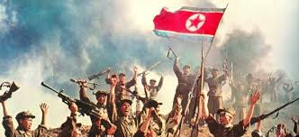

O inicio do bloqueio de berlim foi em 24 de junho de 1948, o país ficou dividido em duas partes; um lado do país transitavam normalmente pela cidade, que eram chamados de "Alemanha Ocidental" e a outra parte do país que eram restritos ao acessos básicos do país ou até mesmo andar pela cidade, eram chamados de "Alemanha Oriental". Com base em tudo isso, As "Alemanhas" foram palco de uma competição aberta entre o Socialismo e o Capitalismo, entretanto, A Alemanha passou por anos vivendo como Socialistas; Durante a construção do socialismo, havia reduzido os padrões de vida. Os bens de consumo estavam em falta e os alimentos eram escassos. Impostos pesados eram cobrados de agricultores privados. Com toda essa situação, as pessoas começaram a saírem do país, alguns começaram a ir para o lado ocidental do país, que seria o lado com total acesso, e eu não diria "ir para o lado ocidental", eu chamo de "invadir" mesmo porquê a situação já estava precária com o socialismo no país, e foi com todos acontecimentos de, escassez de alimento, redução do padrão de vida e até mesmo morte com consequência da escassez dos alimentos. A Alemanha com todo orgulho que tinha na época, mudou o seu país para Capitalistas, e depois de muitos anos;A Alemannha foi se restruturando aos poucos, e viu que o seu próprio país funcionava com o Capitalismo.
Foi um período de disputa política-militar entre a URSS e EUA, começou na década de 40 e durou até 1991. Um dos protagonistas de dessa disputa política-militar foi Harry Truman, que em 1947 fez um discurso no governo que eram "provocações" diretamente a URSS, isso dividiu o mundo em 2 modelos políticos: Capitalista e Socialista, e com essa disputa entre Capitalismo e Socialismo, surgiu a OTAN (Organização do Tratado do Atlântico Norte) e o Pacto de Varsóvia, entre as diferenças de ambos, eles tinham algo em comum; O compromisso de proteção mútua entre seus membros.
Umas das marcas da Guerra Fria foi o tratado nuclear por Moscou e por Washington, os EUA, URSS e o Reino Unido firmaram um documento que proíbe testes nucleares na atmosfera, no espaço e no mar.Cinco anos depois, o Tratado de Não Proliferação de Armas Nucleares (TNP) buscava evitar uma hecatombe atômica, durante a Guerra Fria. Em vigor desde 1970, e originalmente planejado para durar 25 anos, em 1995 foi prorrogado por período indeterminado.
"A Guerra da Coreia foi um conflito que aconteceu entre 1950 e 1953 entre a Coreia do Norte e a Coreia do Sul e iniciou-se quando as tropas norte-coreanas ultrapassaram a fronteira que separa as Coreias, dando início à invasão da Coreia do Sul. Essa guerra foi uma das primeiras manifestações da bipolarização que caracterizou o mundo no período da Guerra Fria. Ao longo de seus anos de duração, a Guerra da Coreia foi responsável pela morte de mais de 2,5 milhões de pessoas e contou com a participação de tropas norte e sul-coreanas, tropas chinesas, americanas e uma modesta participação de soldados soviéticos. O final da guerra trouxe poucas mudanças de fronteira e manteve a divisão e a rivalidade das Coreias acesa por bastante tempo. Cabe o destaque que, apesar da forte rivalidade, houve recentemente gestos de aproximação realizados pelos dois governos."
A Guerra do Vietnã (1959-1975) foi um conflito entre Vietnã do Norte e do Vietnã do Sul, que lutavam pela unificação do país sob a liderança de quem vencesse."A Guerra do Vietnã foi um conflito marcante do século XX entre Vietnã do Norte, Vietnã do Sul e os vietcongues (resistência socialista no Sul). Teve a influência direta de países comunistas como China e União Soviética e dos Estados Unidos da América, cuja interferência até hoje ressoa negativamente no imaginário bélico da superpotência. A Guerra do Vietnã chocou o mundo pelos impactos gerados aos civis e ao meio ambiente por meio dos bombardeamentos indiscriminados na região."